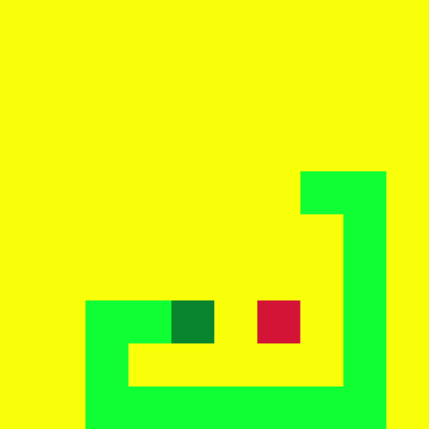
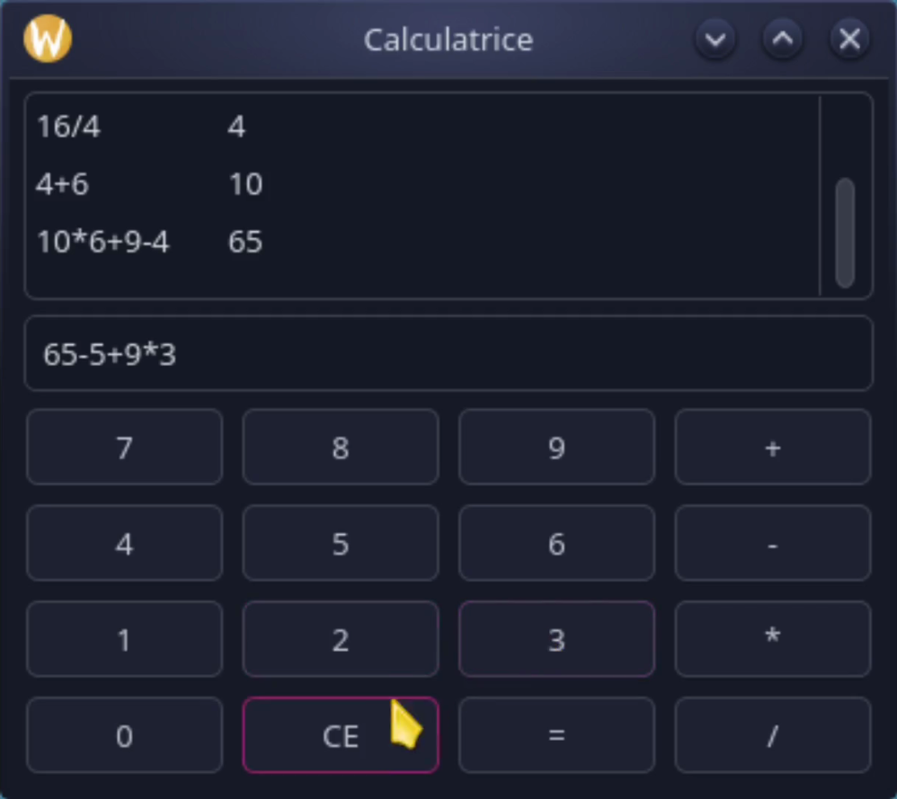
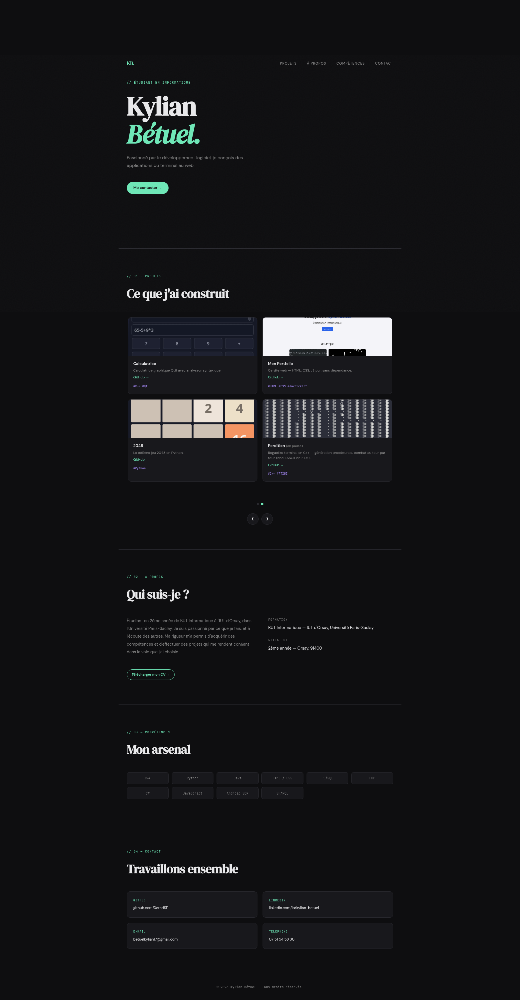
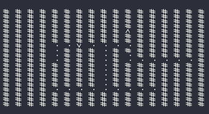

Site de Gestion de Groupes pour les Universités
Application de création de groupes pour des universités. Application de bureau + site web.
Étudiant : Donni / asdasdas — Enseignant : gficou / G@3l_F1ck0u! — Responsable : mmermoz / M@xim3_Merm0z#
// Étudiant en informatique
Passionné par le développement logiciel, je conçois des applications du terminal au web.
Me contacter →// 01 — Projets
Application de création de groupes pour des universités. Application de bureau + site web.
Étudiant : Donni / asdasdas — Enseignant : gficou / G@3l_F1ck0u! — Responsable : mmermoz / M@xim3_Merm0z#







Roguelike terminal en C++ — génération procédurale, combat au tour par tour, rendu ASCII via FTXUI.
// 02 — À propos
Étudiant en 2ème année de BUT Informatique à l'IUT d'Orsay, dans l'Université Paris-Saclay. Je suis passionné par ce que je fais, et à l'écoute des autres. Ma rigueur m'a permis d'acquérir des compétences et d'effectuer des projets qui me rendent confiant dans la voie que j'ai choisie.
Formation
BUT Informatique — IUT d'Orsay, Université Paris-Saclay
Situation
2ème année — Orsay, 91400
// 03 — Compétences
// 04 — Contact
GitHub
Téléphone
07 51 54 58 30